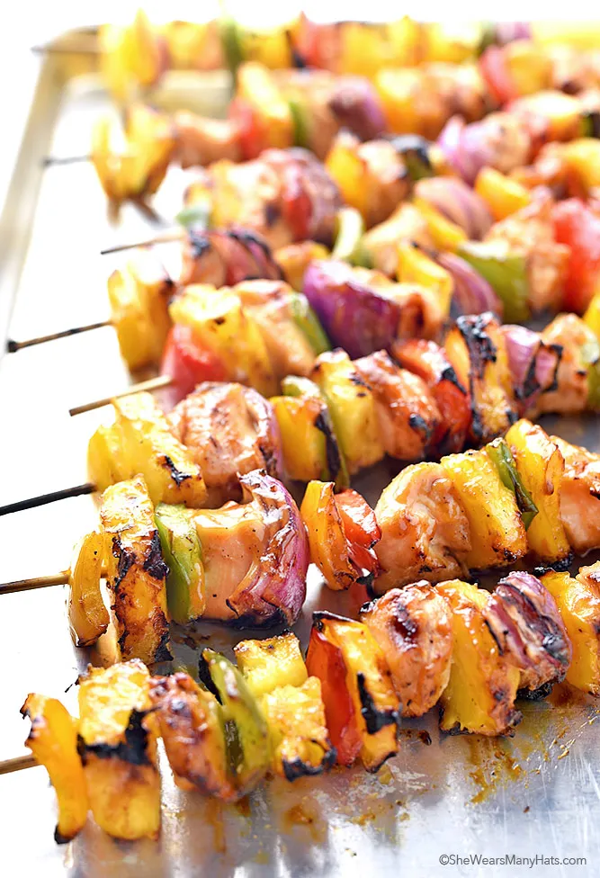

Kabob Recipe

Grilled Hawaiian Kabob Recipe
These Hawaiian Chicken Kabobs are anything but boring and taste like a summer party in your mouth! With juicy pineapple, colorful bell peppers and savory onion, these chicken kabobs are fresh and delicious, perfect for outdoor entertaining and summertime parties.
As for the Hawaiian Chicken Kabobs recipe itself, its super simple. First, whip up the marinade ahead of time by combining the spices and various oils and juices. The chicken needs some time to marinate before cooking, so just make sure you’ve got that taken care of before you even think about getting hungry for dinner. Save half the marinade to baste while the kebobs are grilling. Once you are ready to fire up the grill, go ahead and thread the chicken, peppers, onion and pineapple on the skewers and brush a bit of olive oil on the veggies. Oil the grill grate and place the kabobs on medium heat, turning every 4-5 minutes. Don’t forget to baste! Grill until the chicken is done, which takes about 15-20 minutes. Pop those suckers off and enjoy!
Ingredients
- 1/4 cup soy sauce
- 1/4 cup canned pineapple juice
- 3 tablespoons browns sugar
- 2 tablespoons sesame oil
- 1/2 teaspoon garlic powder
- 1/4 teaspoon ground ginger
- 1/4 teaspoon salt
- 1/4 teaspoon ground black pepper
- 1/4 cup cold water whisked
- 1 tablespoon corn starch
- 4 boneless, skinless chicken breasts cut into 1 1/2 inch pieces
- 3-4 bell peppers cut into 1 1/2 inch pieces
- 1 large red onion cut into 1 1/2 inch pieces
- 2 cups pineapple chunks
- 1-2 tablespoons olive oil
Steps
- Create marinade* in a small sauce pan over medium heat by whisking together soy sauce, pineapple juice, honey, sesame oil, garlic powder, ground ginger, salt and pepper. Bring to a simmer. Separately, whisk together cold water and corn starch until combined. Slowly stream cornstarch mixture into marinade. Whisk all together. Return to a simmer; allow to simmer, whisking occasionally, for 3-4 minutes until marinade thickens. Remove from heat. Set aside.
- Place diced chicken in a large plastic zip-top bag or bowl. Add half of marinade; toss to coat chicken. Seal/cover chicken; refrigerate at least 1 hour up to 4 hours.
- If using wooden skewers, soak in water for at least 30 minutes.
- Preheat grill to medium heat. **
- Alternately thread chicken, peppers, onion and pineapple onto skewers. Brush olive oil on vegetables.
- Oil grill grate. Place kabobs on grill over medium heat. Grill, turning every 4-5 minutes and basting with remaining marinade until chicken is done; about 15-20 minutes.
*Marinade can be made ahead, then kept covered and refrigerated for up to 3 days.
**To broil kabobs in oven, preheat broiler. Line baking sheet with baking parchment. Arrange kabobs in individual layer on baking sheet. Place under broiler; broil, every 5 minutes turn and baste with remaining marinade until chicken is done. About 15-20 minutes.